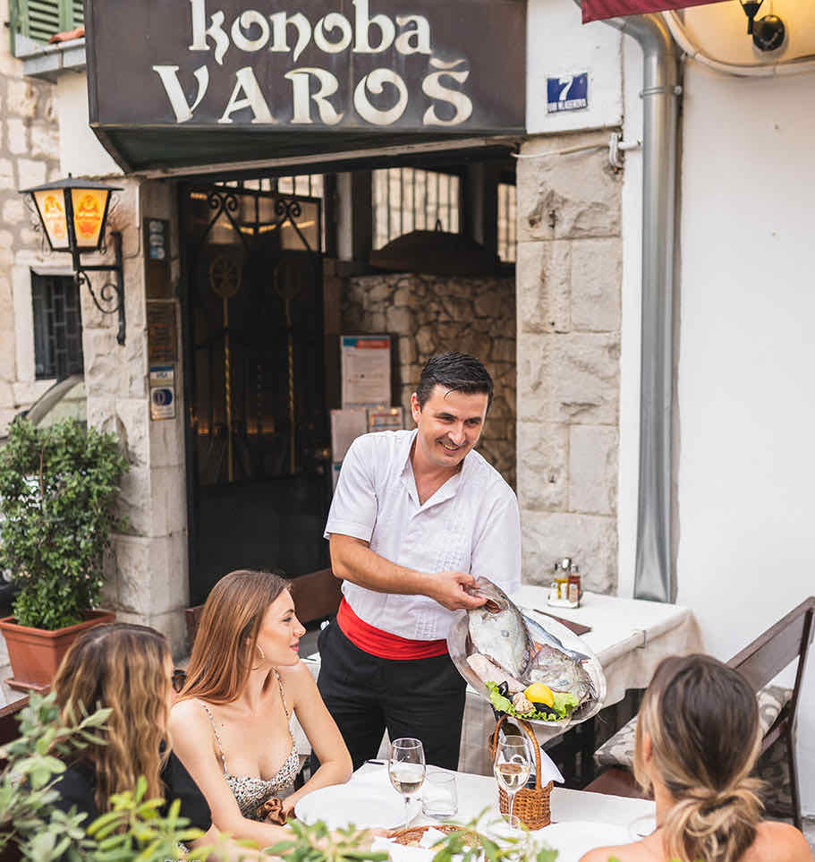
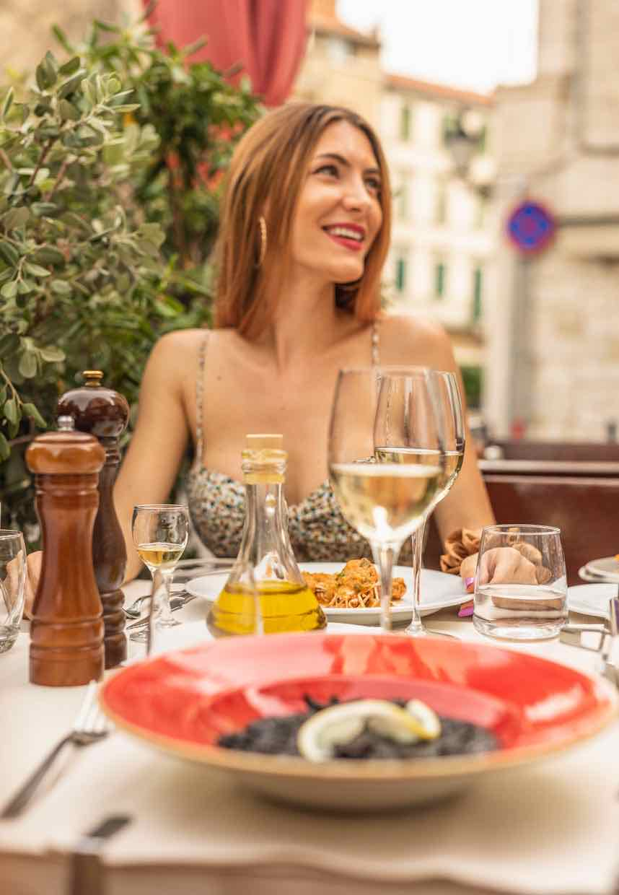
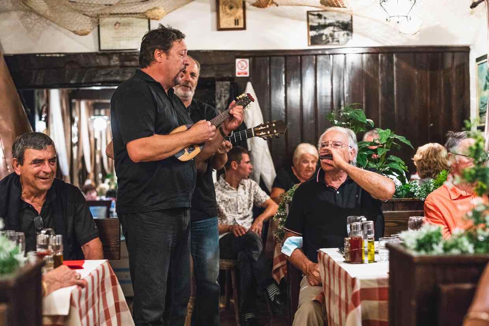

Svježa riba, škampi i jela ispod peke, pripremljeni na tradicionalan način, nekoliko koraka iznad splitske rive.


Konoba „Varoš” nalazi se u starom dijelu Splita, u blizini splitske rive, iznad hotela „Bellevue”.
Već više od 100 godina pripremamo tradicionalna dalmatinska jela: ribu i plodove mora, pašticadu, teleće i janjeće peke. Sve pažljivo, na tradicionalan način. Ribarski motivi i dalmatinska glazba u klimatiziranom prostoru dočarat će vam romantični duh staroga Splita.
Naša usluga je razlog zašto nam se mnogi gosti uvijek iznova vraćaju.
Vrhunac tradicionalne dalmatinske kuhinje: meso ili hobotnica s krumpirom, polako pečeni ispod željeznog zvona, prekriveni žarom.
Peku je potrebno naručiti barem 3 sata unaprijed.

Svježa riba s grilla, škampi na buzaru, crni rižot ili pašticada s domaćim njokima.


Osim ručkova i večera, organiziramo manje pireve i ostale gastronomske svečanosti.
„Ovaj restoran je bio preporuka za mjesto gdje možemo uživati u lokalnoj kuhinji. U ponudi je i janjeća peka koju je potrebno naručiti unaprijed. Janjetina se samo otopila s kosti. Nećete se razočarati!”Debbie M · Tripadvisor
„Obiteljski restoran uređen u starinskom stilu sa zanimljivim slikama i skulpturama. Plata s morskim plodovima na žaru bila je vrhunac našeg odmora. Autentično splitsko iskustvo.”Corey B · Tripadvisor
„Jasna, moja konobarica, pomogla je da večer bude vrlo posebna. Plodovi mora bili su svježi iz Jadranskog mora. Porcije su bile ogromne, a hrana ukusna.”Karen F · Tripadvisor
„Rezervirajte jer je svaki stol bio popunjen. Veliki lokalni favorit za večeru. Brancin i tjestenina s plodovima mora bili su spektakularni i po dobroj cijeni. Usluga je bila fantastična.”Andrea C · Tripadvisor
Ljeti i vikendom preporučujemo rezervaciju. Za jela ispod peke javite se barem 3 sata ranije.